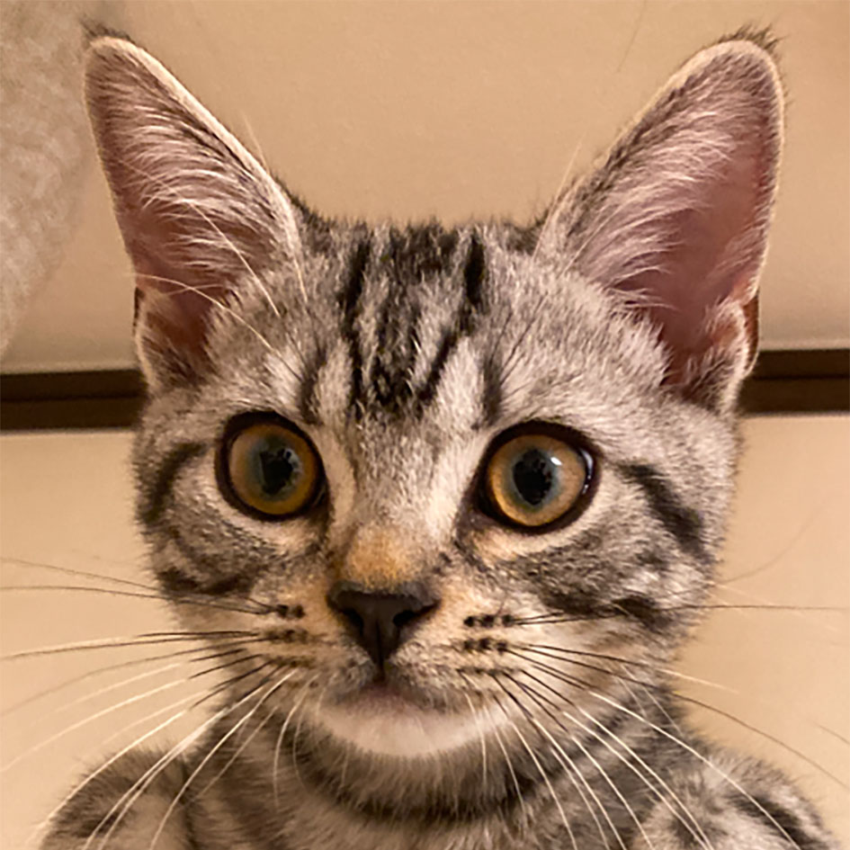

Fox 2E Studio

Yusuke Yokouchi
Σ, 2E, INTJ
Scientist, Founder: Fox 2E Studio
Hobby: cat, car, motorcycle, bicycle, 0→1
Σ, 2E, INTJ
Scientist, Founder: Fox 2E Studio
Hobby: cat, car, motorcycle, bicycle, 0→1